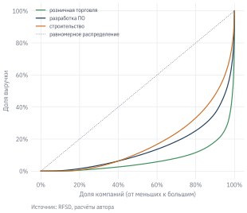

В 2023 г. две крупнейшие продуктовые сети страны продали товаров почти на одну сумму: выручка АО «Тандер» (ИНН 2310031475), которое управляет магазинами «Магнит», составила 2,31 трлн руб., ООО «Агроторг» (ИНН 7825706086), которому принадлежат магазины «Пятёрочка», – 2,36 трлн руб. Но чистая прибыль «Тандера» – 64,9 млрд руб., а «Агроторга» – только 35,4 млрд. Рентабельность продаж первого – 2,8%, второго – 1,5%. Значит, «Тандер» работает эффективнее?
Не так быстро. Собственники компании получают доход на вложенный капитал, а не на выручку. И по рентабельности капитала картина обратная: у «Тандера» ROE 37%, у «Агроторга» – 44%. Как одна сеть может зарабатывать меньше с рубля выручки, но больше с рубля капитала? Ответ даёт разложение DuPont, с которого начинается эта глава. Затем мы научимся описывать отрасль целиком: какова «типичная» компания, насколько сосредоточен рынок, чем лидеры отличаются от остальных и как устроены балансы компаний разных отраслей.
УведомлениеВ этой главе
Раскладываем рентабельность капитала на маржу, оборачиваемость и финансовый рычаг (DuPont).
Измеряем концентрацию отрасли: доля крупнейших компаний, индекс Херфиндаля – Хиршмана, кривая Лоренца.
Сравниваем лидеров отрасли с остальными и проверяем гипотезу статистически.
Следим за динамикой показателей и не путаем изменения компаний с изменением состава выборки.
Сравниваем структуру балансов разных отраслей.
Данные:rfsd_sample.parquet – выборка RFSD из предыдущей главы. Нужно знать: формы отчётности и финансовые коэффициенты (глава «Большие данные корпоративной отчётности»).
6.1 Разложение DuPont
6.1.1 Три источника рентабельности
Рентабельность капитала (ROE) – отношение чистой прибыли к капиталу собственников. Умножим и разделим её на выручку и на активы:
Это тождество – разложение DuPont (по названию химической компании DuPont, где его стали использовать ещё в начале XX в.). Оно показывает, что акционер может зарабатывать тремя способами:
маржой – получать много прибыли с каждого рубля продаж;
оборачиваемостью – быстро «прокручивать» активы, продавая на каждый рубль активов много товаров;
финансовым рычагом – финансировать активы в большей степени за счёт долга, а не собственного капитала.
Произведение первых двух множителей – рентабельность активов: \(\text{ROA} = \text{ROS} \times \text{оборачиваемость}\). Третий множитель показывает, во сколько раз рычаг «увеличивает» ROA до ROE. Рычаг работает в обе стороны: при убытках он так же увеличивает потери капитала, поэтому высокий ROE за счёт мультипликатора – это не только эффективность, но и риск.
6.1.2 Две сети
Применим разложение к «Тандеру» и «Агроторгу».
Код
cols = ["name", "inn", "ros", "turnover", "multiplier", "roa", "roe"]pair.reset_index()[cols].round(3)#> name inn ros turnover multiplier roa roe#> 0 АО "ТАНДЕР" 2310031475 0.028 1.742 7.628 0.049 0.372#> 1 ООО "АГРОТОРГ" 7825706086 0.015 2.286 12.834 0.034 0.439
Теперь видно, как устроена разница. У «Тандера» выше маржа (2,8% против 1,5%) и, как следствие, выше рентабельность активов: 4,9% против 3,4%. «Агроторг» быстрее оборачивает активы (2,29 против 1,74), но главное – его активы финансируются капиталом в гораздо меньшей степени: мультипликатор 12,8 против 7,6. Именно рычаг превращает меньшую рентабельность активов в большую рентабельность капитала.
Отсюда важный вывод для анализа: сравнивать компании по одному показателю рентабельности недостаточно. Нужно понимать, из чего он складывается, и помнить, что отчётность юрлица по РСБУ отражает его место внутри группы: сколько капитала оставлено в операционной компании, а сколько выведено в виде дивидендов холдингу, – это во многом решение собственников, а не результат работы магазинов.
6.1.3 Гипербола ROA
Разложение DuPont удобно изобразить на графике. Отложим по горизонтали оборачиваемость активов, по вертикали – маржу. Тогда компании с одинаковой рентабельностью активов лежат на гиперболе \(\text{ROS} = \text{ROA} / \text{оборачиваемость}\).
Рисунок 6.1: Маржа и оборачиваемость активов компаний выборки в 2023 г. Крупные точки – медианы отраслей, пунктир – линии одинаковой ROA
Отрасли занимают на графике разные области. Разработчики программного обеспечения – наверху: медианная маржа 7,4% при умеренной оборачиваемости. Розничная торговля – справа внизу: маржа всего 1,5%, но активы оборачиваются 2,4 раза в год. Одна и та же рентабельность активов может достигаться очень разными бизнес-моделями, и сравнивать маржу розничной сети с маржой ИТ-компании бессмысленно.
Таблица показывает ещё одну особенность: в строительстве медианный мультипликатор капитала – 9,2. Застройщики финансируют стройку в основном заёмными средствами, прежде всего проектным кредитованием банков, поэтому даже при очень низкой рентабельности активов (1,3%) их ROE сопоставима с другими отраслями.
6.1.4 Рычаг: ROE растёт, ROA падает
Разложение DuPont подсказывает, что долг «увеличивает» рентабельность капитала. Посмотрим, как это выглядит на всех компаниях выборки: разобьём их на группы по доле обязательств в активах и посчитаем медианы.
Две медианы движутся в противоположные стороны. У компаний, у которых обязательства составляют 20–40% активов, медианная ROA – 14,2%, у компаний с долей обязательств 90–100% – 1,0%. Ранговая корреляция доли обязательств и ROA равна −0,54. А медианная ROE при этом растёт с 20% до 36%.
Как это понимать? Во-первых, связь между долгом и ROA работает в обе стороны. Компания может брать в долг, потому что активно растёт, но чаще высокая доля обязательств – следствие проблем: убытки «съедают» капитал, и компания живёт за счёт кредиторов, в том числе поставщиков и связанных лиц. Прибыльные компании, наоборот, накапливают капитал и меньше нуждаются в займах. Во-вторых, рост ROE в правой части таблицы во многом механический: когда капитал мал, даже небольшая прибыль даёт высокое отношение. В-третьих, у 7% компаний капитал отрицательный (последняя группа), ROE для них не определена, и они выпадают из расчёта, хотя 71% из них убыточны. Высокая медианная ROE закредитованных компаний – отчасти результат того, что самые проблемные из них в расчёт не попали.
Вывод для анализа: высокая ROE при большом мультипликаторе капитала – повод посмотреть на баланс внимательнее, а не признак успеха.
УведомлениеПочему не EBITDA
В отраслевых обзорах маржу и долговую нагрузку часто сравнивают по EBITDA. По данным RFSD этого сделать нельзя: в российской отчётности нет строки с амортизацией (см. раздел 5.6.1). Для капиталоёмких отраслей – транспорта, энергетики, добычи – разница между EBIT и EBITDA особенно велика, поэтому сравнивать их с малокапиталоёмкими отраслями по EBIT нужно с оговоркой: часть различий в марже объясняется амортизацией, а не эффективностью.
6.2 Концентрация отрасли
Насколько рынок поделен между немногими крупными игроками? Это важно и для инвестора (в концентрированных отраслях лидеры обычно устойчивее и прибыльнее), и для регулятора (высокая концентрация может означать недостаток конкуренции). Три стандартные меры концентрации:
доля крупнейших компаний – например, CR5, доля пяти крупнейших компаний в суммарной выручке;
индекс Херфиндаля – Хиршмана (HHI) – сумма квадратов рыночных долей в процентах: \(\text{HHI} = \sum_i s_i^2\). Он равен 10 000 при монополии и близок к нулю на раздробленном рынке. В методике ФАС России рынок с HHI от 1 000 до 2 000 считается умеренно концентрированным, выше 2 000 – высококонцентрированным;
коэффициент Джини и кривая Лоренца – насколько неравномерно выручка распределена между компаниями.
Розничная торговля – самая концентрированная из пяти отраслей: на пять крупнейших компаний приходится 33% выручки, HHI – 334. Производство пищевых продуктов и строительство, напротив, раздроблены: CR5 – 9% и 6%.
Код
fig, ax = plt.subplots(figsize=(4.8, 4))for code, color in [("47", "#3F8F5B"), ("62", "#23415F"), ("41", "#C8702A")]: x = np.sort(r[(r["year"] ==2023) & (r["div"] == code)]["line_2110"].dropna().to_numpy()) lorenz = np.concatenate([[0], np.cumsum(x) / x.sum()]) ax.plot(np.linspace(0, 1, len(lorenz)), lorenz, color=color, label=DIV[code])ax.plot([0, 1], [0, 1], color="#6B7280", ls=":", lw=0.8, label="равномерное распределение")ax.set_xlabel("Доля компаний (от меньших к большим)")ax.set_ylabel("Доля выручки")ax.xaxis.set_major_formatter(plt.FuncFormatter(lambda v, _: f"{v:.0%}"))ax.yaxis.set_major_formatter(plt.FuncFormatter(lambda v, _: f"{v:.0%}"))ax.legend(fontsize=7)plot.source(ax, "RFSD, расчёты автора", offset=32)plt.show()

Рисунок 6.2: Кривые Лоренца для выручки компаний в 2023 г.
ПредупреждениеТипичная ошибка
Считать концентрацию по неполному списку компаний. Наша выборка содержит только компании с выручкой от 1 млрд руб. хотя бы в одном году, поэтому показатели выше описывают концентрацию среди крупных компаний. Если добавить тысячи мелких фирм, доля пяти крупнейших снизится, а коэффициент Джини вырастет – насколько, зависит от отрасли. Кроме того, компании, скрывшие отчётность (глава «Большие данные корпоративной отчётности»), выпадают из расчёта: концентрация получается заниженной, если среди них есть крупные игроки. Всегда указывайте, по какому кругу компаний посчитан показатель.
6.3 Лидеры и остальные
Правда ли, что крупнейшие компании отрасли эффективнее остальных? И если да, то за счёт чего – маржи, оборачиваемости или рычага? Это типичный вопрос отраслевого анализа, и отвечать на него нужно так же, как на любой исследовательский вопрос: сформулировать гипотезу, выбрать показатели и проверить гипотезу на данных.
Разделим компании каждой отрасли в 2023 г. на лидеров (10% крупнейших по выручке) и остальных и сравним медианы.
В производстве пищевых продуктов разница особенно заметна: медианная ROA лидеров – 11,5%, остальных – 5,4%. И получена она за счёт маржи (6,0% против 2,5%), а не оборачиваемости – оборачиваемость у лидеров даже ниже (1,72 против 2,00). Крупные производители продуктов, по-видимому, зарабатывают на брендах, масштабе закупок и переговорной силе с торговыми сетями, а не на скорости оборота.
Не случайна ли эта разница? Распределения рентабельности далеки от нормального, поэтому вместо \(t\)-теста для сравнения двух групп используем непараметрический критерий Манна – Уитни: он проверяет, склонны ли значения одной группы быть больше значений другой, и не чувствителен к выбросам.
p-значение меньше 0,001 при 193 лидерах и 1 755 остальных компаниях: разница статистически значима. Но статистическая значимость не отвечает на вопрос «почему». Лидеры могут быть эффективнее, потому что они крупные (эффект масштаба), а могут быть крупными, потому что эффективнее (успешные компании растут). По данным одного года эти объяснения не различить – для этого нужны данные за много лет и более сложные методы.
6.4 Динамика и состав выборки
Как менялась рентабельность отраслей в 2018–2024 гг.?
Рисунок 6.3: Медианная рентабельность продаж по отраслям
Заметнее всего изменилась рентабельность разработчиков программного обеспечения: с 4,4% в 2018 г. до 7,4% в 2023 г. Среди вероятных причин – уход с российского рынка иностранных поставщиков программ после 2022 г. и налоговые льготы для ИТ-компаний. Но прежде чем объяснять рост экономикой, нужно исключить более простое объяснение – изменение состава выборки.
Медиана за каждый год считается по тем компаниям, которые отчитались в этом году. Если в отрасль пришли новые, более рентабельные компании, медиана вырастет, даже если ни одна из прежних компаний не стала эффективнее. Проверим это на сбалансированной панели – только тех ИТ-компаниях, которые отчитывались во все годы периода.
Код
it = r[r["div"] =="62"]years_present = it.groupby("inn")["year"].nunique()balanced = it[it["inn"].isin(years_present[years_present == it["year"].nunique()].index)]panel = pd.DataFrame({"все компании": it.groupby("year")["ros"].median(),"компаний": it.groupby("year")["inn"].nunique(),"сбалансированная панель": balanced.groupby("year")["ros"].median(),"компаний в панели": balanced.groupby("year")["inn"].nunique(),})panel.round(3)#> все компании компаний сбалансированная панель компаний в панели#> year #> 2018 0.044 589 0.044 448#> 2019 0.045 635 0.047 448#> 2020 0.048 704 0.051 448#> 2021 0.061 758 0.061 448#> 2022 0.064 936 0.063 448#> 2023 0.074 972 0.079 448#> 2024 0.073 959 0.077 448
Состав выборки действительно менялся: в 2018 г. отчитались 589 ИТ-компаний, в 2023 г. – 972. Но в сбалансированной панели из 448 компаний медианная рентабельность выросла так же – с 4,4% до 7,9%. Значит, рост не сводится к смене состава: рентабельнее стали сами компании. Если бы рост был виден только по всем компаниям, а в панели – нет, объяснять его пришлось бы приходом новых фирм. Обратите внимание, что сбалансированная панель тоже не свободна от смещения: в неё попадают только компании, которые проработали весь период, то есть «выжившие».
6.5 Структура балансов
Отрасли различаются не только рентабельностью, но и тем, во что вложены их активы. Посмотрим на медианные доли основных статей актива.
Код
d23 = r[r["year"] ==2023]profile = pd.DataFrame({"осн. средства": d23["line_1150"] / d23["line_1600"],"запасы": d23["line_1210"] / d23["line_1600"],"дебиторка": d23["line_1230"] / d23["line_1600"],"деньги": d23["line_1250"] / d23["line_1600"],}).groupby(d23["div"]).median().rename(index=DIV)profile.round(3)#> осн. средства запасы дебиторка деньги#> div #> пищевые продукты 0.231 0.216 0.285 0.011#> строительство 0.028 0.191 0.473 0.021#> розничная торговля 0.126 0.346 0.154 0.051#> сухопутный транспорт 0.411 0.025 0.341 0.011#> разработка ПО 0.029 0.016 0.430 0.083
Структура баланса хорошо отражает бизнес-модель. У транспортных компаний основные средства – 41% активов: это подвижной состав, трубопроводы, терминалы. У розничных сетей самая большая статья – запасы (35%), то есть товары на полках и складах. У строителей и разработчиков программ основных средств почти нет, а крупнейшая статья активов – дебиторская задолженность (47% и 43%): неоплаченные заказчиками работы и авансы, выданные подрядчикам и поставщикам.
Такой «профиль отрасли» полезен как ориентир: если структура баланса отдельной компании сильно отличается от типичной для её отрасли, стоит выяснить почему. Возможно, у компании особая бизнес-модель, а возможно, код ОКВЭД не отражает её реальную деятельность или в отчётности есть ошибки.
Итоги
Разложение DuPont делит рентабельность капитала на маржу, оборачиваемость активов и финансовый рычаг. Одинаковую ROE можно получить очень разными бизнес-моделями, а высокий рычаг означает не только доходность, но и риск. На данных у закредитованных компаний ROA ниже, а высокая ROE во многом механическая.
EBITDA по данным RFSD не считается: амортизации в отчётности нет. Используйте EBIT и прибыль от продаж под их настоящими названиями.
«Гипербола ROA» – карта бизнес-моделей: отрасли занимают на ней разные области, и сравнивать маржу компаний разных отраслей нельзя.
Концентрацию измеряют долей крупнейших компаний (CR5), индексом Херфиндаля – Хиршмана и коэффициентом Джини. Результат зависит от того, по какому кругу компаний он посчитан.
Сравнение лидеров и остальных – проверка гипотезы: нужны показатели, статистический критерий (для рентабельности – непараметрический) и осторожность в выводах о причинах.
Изменение медианы во времени может объясняться сменой состава компаний; проверка – сбалансированная панель.
Структура баланса отражает бизнес-модель отрасли и помогает находить нетипичные компании.
6.6 Упражнения
6.6.1 А. Понимание
У компании рентабельность продаж 4%, оборачиваемость активов 2,5, мультипликатор капитала 3. Чему равны ROA и ROE? Как изменится ROE, если компания возьмёт кредит и мультипликатор вырастет до 5, а процентные расходы снизят маржу до 3%?
На рынке пять компаний с долями 40%, 30%, 15%, 10% и 5%. Посчитайте CR3 и HHI. Как изменится HHI, если две крупнейшие компании объединятся?
Почему для сравнения рентабельности двух групп компаний лучше использовать критерий Манна – Уитни, а не \(t\)-тест?
В таблице раздела о рычаге медианная ROE растёт с долей обязательств, а медианная ROA падает. Приведите два объяснения и скажите, какие компании выпадают из расчёта ROE.
6.6.2 Б. Практика на своей отрасли
Постройте для своей отрасли (полный RFSD, 2023 г.) гиперболу ROA. Найдите на графике компании с необычной бизнес-моделью и выясните, чем они занимаются.
Посчитайте CR5, HHI и коэффициент Джини для своей отрасли за 2018 и 2023 гг. – по всем компаниям и только по компаниям с выручкой от 1 млрд руб. Объясните различия.
Проверьте гипотезу «лидеры отрасли эффективнее остальных» для своей отрасли. За счёт какого множителя DuPont возникает разница?
6.6.3 В. Работа с ИИ-ассистентом
Попросите ИИ-ассистента объяснить, почему ROE «Агроторга» выше, чем у «Тандера», при меньшей марже. Сравните его объяснение с разложением DuPont на данных. Упомянул ли ассистент, что речь идёт об отчётности отдельных юрлиц внутри групп?
Попросите ассистента написать функцию расчёта HHI. Проверьте её на примере из упражнения 2. В каких единицах ассистент выражает доли и какой масштаб HHI получается?
Попросите ассистента посчитать EBITDA-маржу вашей отрасли по данным RFSD. Какую строку он использует как амортизацию? Объясните, что на самом деле посчитано, и переделайте расчёт с честным названием показателя.
6.6.4 Г. Мини-исследование
Выберите отрасль, пережившую крупное изменение регулирования или рынка (например, переход строительства на эскроу-счета в 2019 г. или уход иностранных компаний в 2022 г.), и проследите по RFSD, как изменились концентрация, рентабельность и структура балансов. Отделите изменения внутри компаний от изменения состава отрасли. Подготовьте короткий устный рассказ.
Постройте гистограмму выручки всех компаний (полный RFSD) в диапазоне от 100 до 400 млн руб. за несколько лет. Есть ли скопление компаний чуть ниже порога доходов для упрощённой системы налогообложения (уточните порог для каждого года)? Как менялось положение скопления при изменении порога и что это говорит о поведении компаний?
Вопросы для самопроверки
Запишите разложение DuPont. Какой множитель отвечает за финансовый риск?
Что показывает гипербола ROA и почему её удобно строить в логарифмической шкале по оборачиваемости?
Как считается индекс Херфиндаля – Хиршмана и в каких пределах он меняется?
Почему рост медианной рентабельности отрасли не обязательно означает, что компании стали эффективнее?
Какие статьи баланса преобладают у транспортных компаний, розничных сетей и строителей?
Сочетания маржи и оборачиваемости с одинаковой ROA; логарифмическая шкала растягивает область низкой оборачиваемости, где лежит большинство капиталоёмких компаний.
Сумма квадратов рыночных долей в процентах; от почти нуля (раздробленный рынок) до 10 000 (монополия).
Из-за изменения состава компаний: могли прийти новые, более рентабельные, или уйти слабые. Проверка – сбалансированная панель.
У транспорта – основные средства, у розницы – запасы, у строителей – дебиторская задолженность.
Что почитать
Bodie и др. (2021 г.), глава об анализе финансовой отчётности – разложение DuPont и финансовые коэффициенты.
Bondarkov и др. (2025 г.) – описание данных RFSD, в том числе примеры отраслевых распределений.
Bodie, Zvi, Alex Kane, и Alan J. Marcus. 2021 г. Investments. 12-я изд. McGraw-Hill.
Bondarkov, Sergey, Victor Ledenev, и Dmitriy Skougarevskiy. 2025 г. «Russian Financial Statements Database». Scientific Data 12. https://doi.org/10.1038/s41597-025-05150-1.